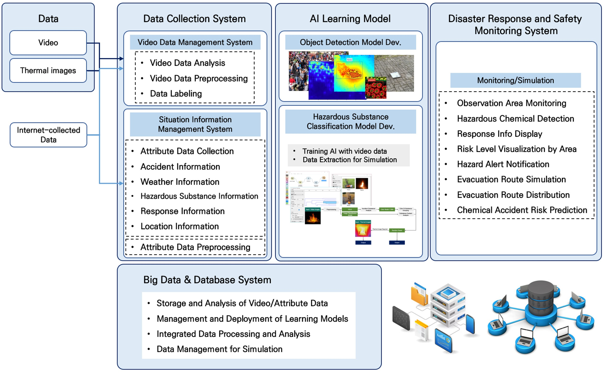
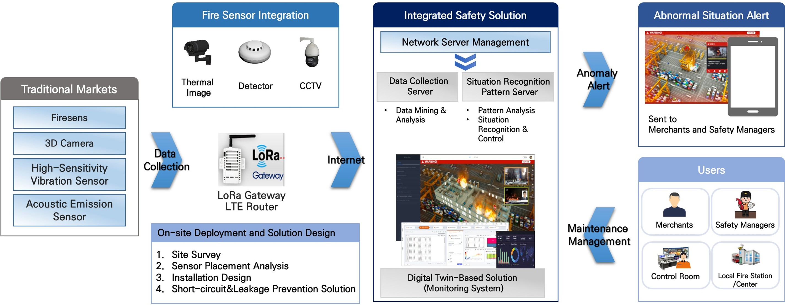
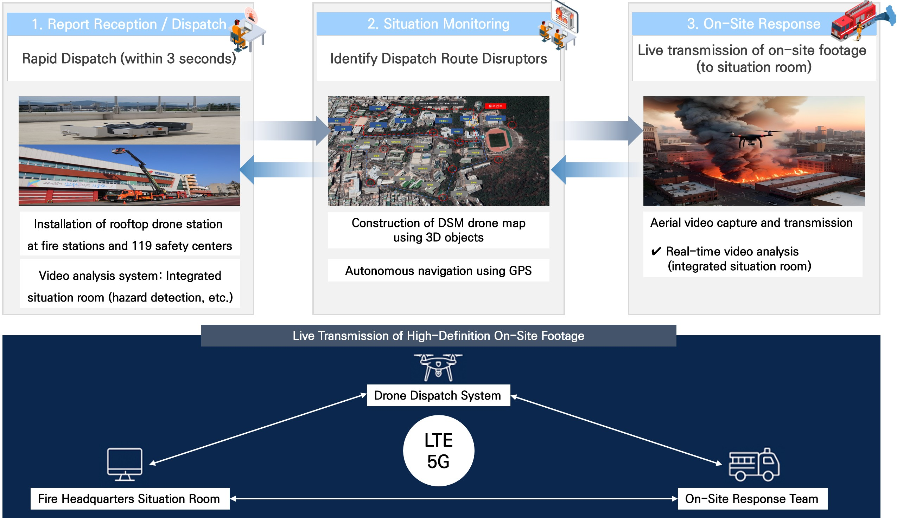
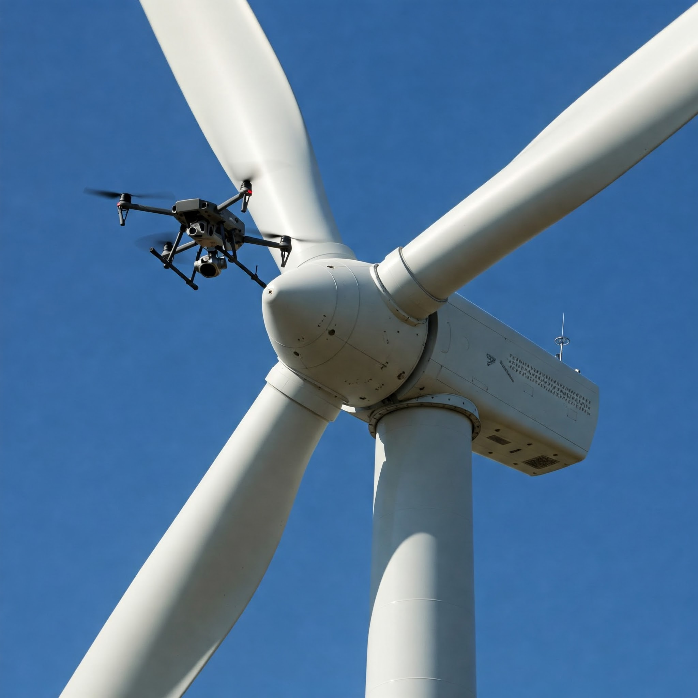

AI, IoT, 빅데이터 기반의 재난안전 솔루션 소프트웨어 전문 기업입니다. 우리는 재난과 재해를 단순히 대응하는 것을 넘어, 사전에 예측하고 예방할 수 있는 솔루션을 제공합니다. 네스토즈는 다양한 위험 요소를 실시간으로 감지하고 분석하는 지능형 안전관리 시스템을 통해, 사고 이전 단계에서의 경고와 선제적 대응이 가능하도록 지원하고 있습니다. 이러한 기술은 전문 기술 인력과 산업·학계 협업 네트워크를 바탕으로 위험 예측의 정밀도 향상은 물론, 기존 안전관리의 디지털 전환(DX), 현장 중심의 확장성과 실효성 있는 솔루션 구현으로 이어질 것입니다. 현장에서 실제로 적용할 수 있는 안전 기술 — 그것이 네스토즈가 집중하는 분야입니다.
Get Started!현장의 안전을 위한 실용적이고 신뢰성 높은 기술을 제공합니다.
화학물질의 누출 및 화재 사고가 발생했을 때 촬영한 영상을 AI 알고리즘으로 분석하여 사고 물질을 판단하는 시스템으로, 화학물질 사고에서 소방 진압 및 대응 시간을 최소화하기 위하여 AI 기반 유해화학물질의 판독/모니터링/대책 등을 지원하는 재난안전 대응 모니터링 솔루션입니다.
<화학재난 현장에 적용할 수 있는 AI 솔루션>
전통시장에서 누전 및 누수 탐지를 통해 화재를 포함한 재난을 사전에 예방하는 딥러닝 적용 모니터링 시스템입니다.
<전통시장 재난안전관리 솔루션>
화재 등 재난 발생 시 드론을 먼저 투입하여 현장 상황을 신속히 파악함으로써, 재난 대응 요원이 사전에 정보를 인지하고 보다 빠르고 효율적으로 초동 대응할 수 있도록 지원하는 정찰 드론 연계 시스템입니다.
<신속한 화재 대응을 위한 드론 기반 화재 영상 분석 솔루션>
풍력발전기 블레이드의 비파괴 검사 및 고장 위치의 정밀 판단을 위한 드론 봇을 활용하여, 블레이드의 외부 손상이나 내부 크랙을 자동으로 검사하는 솔루션입니다.
<풍력발전기 블레이드 고장 진단을 위한 드론봇 솔루션>